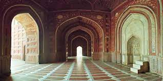
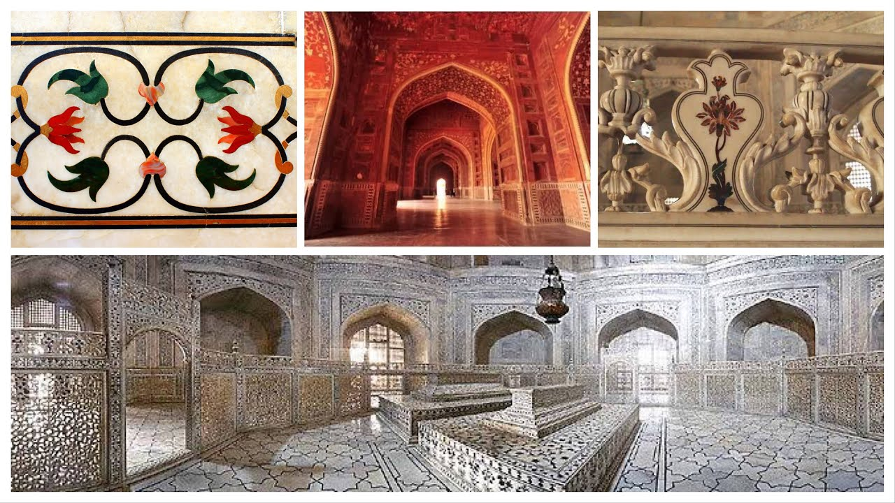
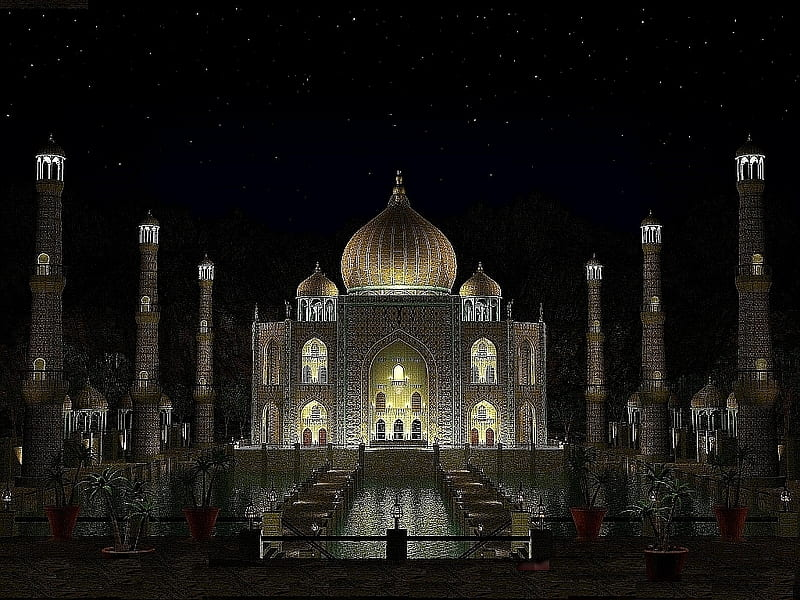

|Taj Mahal
|Taj Mahal
The Taj Mahal was commissioned by Shah Jahan in 1631, to be built in the memory of his wife Mumtaz Mahal, who died on 17 June that year, while giving birth to their 14th child, Gauhara Begum. Construction started in 1632, and the mausoleum was completed in 1648, while the surrounding buildings and garden were finished five years later. The imperial court documenting Shah Jahan's grief after the death of Mumtaz Mahal illustrates the love story held as the inspiration for the Taj Mahal.
The Taj Mahal incorporates and expands on design traditions of Indo-Islamic and earlier Mughal architecture. Specific inspiration came from successful Timurid and Mughal buildings including the Gur-e Amir (the tomb of Timur, progenitor of the Mughal dynasty, in Samarkand), Humayun's Tomb which inspired the Charbagh gardens and hasht-behesht (architecture) plan of the site, Itmad-Ud-Daulah's Tomb (sometimes called the Baby Taj), and Shah Jahan's own Jama Masjid in Delhi. While earlier Mughal buildings were primarily constructed of red sandstone, Shah Jahan promoted the use of white marble inlaid with semi-precious stones. Buildings under his patronage reached new levels of refinement.
The Taj Mahal is built on a parcel of land to the south of the walled city of Agra. Shah Jahan presented Maharajah Jai Singh with a large palace in the centre of Agra in exchange for the land. An area of roughly 1.2 hectares (3 acres) was excavated, filled with dirt to reduce seepage, and levelled at 50 metres (160 ft) above riverbank. In the tomb area, wells were dug and filled with stone and rubble to form the footings of the tomb. Instead of lashed bamboo, workmen constructed a colossal brick scaffold that mirrored the tomb. The scaffold was so enormous that foremen estimated it would take years to dismantle. The Taj Mahal was constructed using materials from all over India and Asia. It is believed over 1,000 elephants were used to transport building materials. It took the efforts of 22,000 labourers, painters, embroidery artists and stonecutters to shape the Taj Mahal. The translucent white marble was brought from Makrana, Rajasthan, the jasper from Punjab, jade and crystal from China. The turquoise was from Tibet and the Lapis lazuli from Afghanistan, while the sapphire came from Sri Lanka and the carnelian from Arabia. In all, twenty-eight types of precious and semi-precious stones were inlaid into the white marble.tation needed According to the legend, Shah Jahan decreed that anyone could keep the bricks taken from the scaffold, and thus it was dismantled by peasants overnight. A 15-kilometre (9.3 mi) tamped-earth ramp was built to transport marble and materials to the construction site and teams of twenty or thirty oxen pulled the blocks on specially constructed wagons. An elaborate post-and-beam pulley system was used to raise the blocks into desired position. Water was drawn from the river by a series of purs, an animal-powered rope and bucket mechanism, into a large storage tank and raised to a large distribution tank. It was passed into three subsidiary tanks, from which it was piped to the complex.tation needed The plinth and tomb took roughly 12 years to complete. The remaining parts of the complex took an additional 10 years and were completed in order of minarets, mosque and jawab, and gateway. Since the complex was built in stages, discrepancies exist in completion dates due to differing opinions on "completion". Construction of the mausoleum itself was essentially completed by 1643 while work on the outlying buildings continued for years. Estimates of the cost of construction vary due to difficulties in estimating costs across time. The total cost at the time has been estimated to be about ₹ 32 million, which is around ₹ 52.8 billion ($827 million US) based on 2015 values.
| Pictures | |
|---|---|
|  |  |
 |
 |
| Videos | |